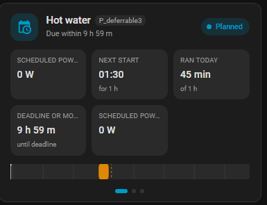
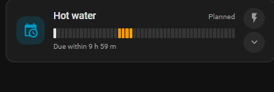
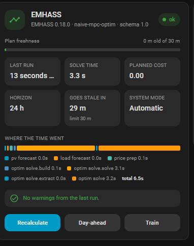
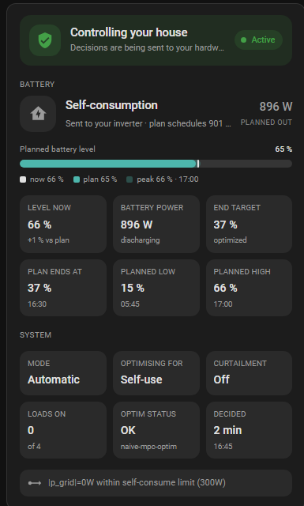
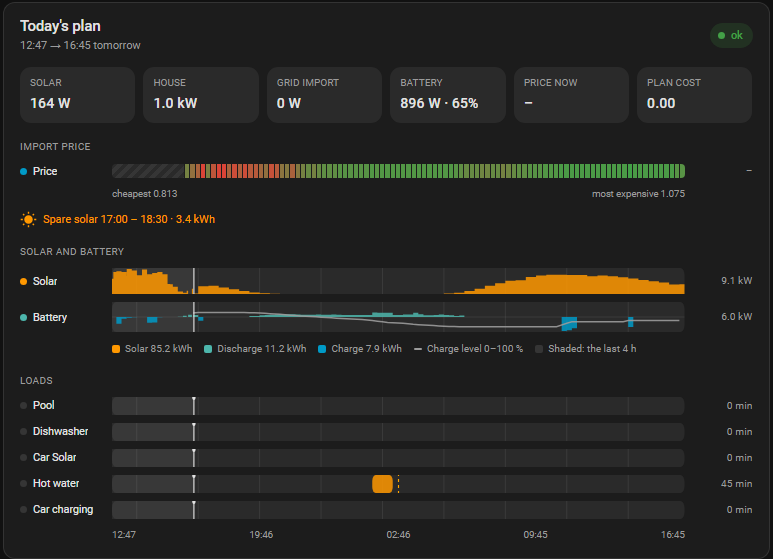

Lab cards (experimental)¶
Five card designs that are being tried on real dashboards before any of them
replaces what Dashboard cards documents. They ship in
their own bundle, frontend/emhass-cards-lab.js, registered as a second
Lovelace resource alongside the stable one — so an experiment cannot break a
card an existing dashboard depends on, and the whole set can be withdrawn by
deleting one file and one entry in frontend.py's BUNDLES.
They appear in the card picker as "EMHASS … (lab)". None of them is stable: names, options and behaviour will change, and the ones that do not earn their place will be deleted outright.
Two takes on one deferrable load¶
Both keep the existing card's top half — name, P_deferrableN slot,
status, and the numbers — and differ in what they do with the space below it,
which today is a fixed list of entity rows.
Each takes an optional load:, matched against the load's name (the device
name). Left out, they show the first load.
Swipe — emhass-deferrable-swipe-card¶

Three swiped pages under a shared header, on CSS scroll snapping — the browser does the physics, so there is no carousel library and no drag handling to get wrong. Dots below double as buttons on a desktop.
- Now — scheduled power, next start, runtime today, and either the deadline or the recurrence, over a plan track.
- Control — Requested, Run within / Energy needed, and a full-width Run now. Only the rows that mean something for the load's mode appear.
- Plan — a taller track with hour ticks, plus every run window written out
as
13:30 – 15:30 · 3.0 kW.
Enabled is not on this card or the strip below, for the same reason it is not on the shipping card: it takes the load out of the optimisation entirely, which is a setup decision rather than a daily one. The header still reads "Disabled" while it is off.
type: custom:emhass-deferrable-swipe-card
load: Hot water
Strip — emhass-deferrable-strip-card¶

One load in the height of a tile, for a dashboard that lists eight of them. The day is drawn as 48 fixed-width buckets rather than proportional blocks, so a load that switches twenty times and one that switches twice have the same visual density. Two pinned round sub-buttons run it now and open a drawer with Requested and Run within in it.
type: custom:emhass-deferrable-strip-card
load: Hot water
Three status cards¶
emhass-health-card — is the optimiser healthy¶

Almost everything here already exists as attributes on Optimisation status, where nobody looks: the run's duration, its stage-by-stage breakdown, the EMHASS version that answered and the warnings it collected.
- A freshness meter reading the plan's age against
stale_after, so "out of date" is a bar approaching a limit rather than a boolean that flips. - Last run, solve time, planned cost, plan horizon — plus two more boxes you choose, see below.
stage_timesas one stacked bar — the only question asked of stage timings is which stage dominates, which is a length.- Warnings and
error_message, or an explicit "no warnings" when there are none. - Buttons for Recalculate now, Rebuild day-ahead and Train load forecaster.
Every section can be turned off from the card's own visual editor — no YAML needed. The switches write only what is off, so the config stays short:
type: custom:emhass-health-card
title: EMHASS
show_stages: false
| Option | Default | Hides |
|---|---|---|
show_freshness |
true |
the plan-freshness meter |
show_stats |
true |
the whole row of info boxes |
show_stages |
true |
the stage-timing bar and its key |
show_problems |
true |
the warnings and errors |
show_actions |
true |
the three buttons |
The two chosen boxes¶
Boxes five and six of the row are picked from a dropdown, since the four fixed ones already answer "did the run go well" and what is worth having beside that answer differs per house. They default to Goes stale in and System mode — both context the card could not show before rather than a second copy of something it already does. Set either to Nothing and it is not drawn at all, rather than drawn empty.
type: custom:emhass-health-card
box_5: slowest_stage
box_6: price
The choices are goes_stale, action, version, warnings,
slowest_stage, mode, goal, control, soc, end_soc, battery,
battery_action, solar, house, grid, price, sell_price, surplus,
plan_end, steps, loads — and none. Each carries a second line saying
what its value is measured against ("limit 30 m", "charging", "12 min apart"),
and tapping one opens the entity behind it.
Filtering the back-fill warning¶
A day-ahead price source does not publish tomorrow until early afternoon, so the payload extends the tail of the horizon by repeating the previous day's prices — and says so, every run, for well over half of every day. It is correct and expected, and a warnings box that carries it permanently is one the eye learns to skip, including on the day something real turns up in it.
Hide price back-fill warnings in the editor drops it, and only it: the other short-series warning ("EMHASS will hold the last value for the remainder") means a forecast genuinely ran out and always stays. What was filtered is still counted on the card, so a silenced warning never looks like a clean run.
type: custom:emhass-health-card
hide_fill_warnings: true
emhass-status-card — what it is doing to the house¶

Status only: there is not a switch, chip or slider on it. The dry-run gate and the system mode are the two settings most easily changed by accident from a phone in a pocket, and a card that is glanced at many times for every time it is operated is the wrong place to keep them. Tapping any icon opens the entity, so the settings are one tap away rather than absent.
- A banner that goes green when the Companion is in charge and the hardware is doing what the plan asks — control enabled, commands resolved, and nothing left to correct. The gate shut reads "Dry run / Watching", a failed command turns it red, a command that has just gone out takes the accent ("Updated"), and no resolvable command at all turns it amber (see below).
- The battery decision with its reason and its power, and — separately — whether the command actually went out. A decision that is already in force is not re-sent every run, so "already in effect" and "not sent" are different states and the card says which.
- Planned battery level on one rail: the plan's level now as the fill, the peak still to come as a lighter band beyond it, the lowest level still to come as a tick, and the measured level as a marker. A visible gap between marker and fill is a plan running on a stale SOC, which no single-value display can show; the low tick is the other half of the same question, since a plan that ends the day full can still empty the battery on the way, and it turns red when the trough goes under 20 %.
- Value boxes under Battery — the measured level with its gap to the plan, battery power with its charge/discharge sense, the end SOC target against where the plan actually ends, and the planned low and high with the times they fall.
- Value boxes under System — mode, cost function, curtailment, how many deferrable loads the decision has switched on, how the last optimisation run ended, and how long ago the decision was taken.
- The executor's own
rulesfor the current decision, and itserrorif there is one. The error is never hidden, whatever the card is configured down to.
What the banner states mean¶
| Banner | Pill | Means |
|---|---|---|
| Control failed (red) | Error | The last command did not go through. Checked first: a failure outranks everything below. |
| Dry run (grey) | Watching | The control gate is off. Decisions are computed in full and none of them is sent. |
| Armed (amber) | No command | Nothing resolved at all — no inverter profile, or the profile defines no action for what was decided. |
| Controlling your house (accent) | Updated | The plan changed its mind, and the new decision went out on this run. |
| Controlling your house (green) | In sync | The hardware is doing what the plan asks — whether that took a write this run or not. |
Green is the state a working install sits in nearly all the time, and that is deliberate. Reserving it for the runs that wrote something leaves a perfectly healthy system reading "Armed / Standby" for most of the day, which is exactly what the earlier wording did: the executor writes only on a change, past the deadband, or before a time-limited command lapses, so a battery charging at full power sends nothing at all for most of the hour it charges.
"Updated" is an event rather than a state, and it means the decision changed — self-consumption to force-charge, say. It deliberately does not fire when the same action is re-sent at a new power, which is a much commoner thing: a charge window holds one action for an hour while the plan revises its power every few minutes, and each revision past the 100 W deadband is a fresh write. Treating those as news would put the banner in the accent colour for the whole of a working charge, which is the opposite of what the colour is for. The settled banner says "command refreshed" instead when the last run did write.
The card tells the two apart from the decision sensor itself: its state is
the action, so last_changed moves only when the action does, while the at
attribute advances every run. The run that changed the action is the one where
those two timestamps coincide; a re-send leaves them minutes apart.
Amber is kept for the one case that wants attention. Loads are still switched when it shows — the sub-line says "Loads only" if any are configured — but the battery is not being touched at all. See Inverter control.
One deliberate gap: a profile that sets min_write_interval_s can have a
wanted change suppressed by its own rate limit, and the banner reads green
for that run rather than admitting the command is pending. It clears on the
next run, and only profiles that set the field can reach it.
The decision's power¶
The big figure beside the decision is labelled with which power it is:
- charging now / discharging now / now — the live reading from the battery's own power sensor. Preferred over everything below it, and the direction is named whenever the Companion is the one that was told which sensor to read, since only then is its sign convention known.
- target — the power the last command carried, for a forced charge or discharge, when there is no live sensor to read.
- planned in / planned out — the plan's own figure for this moment, as a last resort.
Live first, because the two below it describe an intention rather than an outcome. A target outlives its command: the decision taken at the top of the quarter hour is still the last decision after the executor has stopped the battery, so a stale "2.7 kW" would sit beside a battery at rest. And a self-consumption decision carries no target at all — the point of it is handing the battery back to the inverter to follow the house, so the executor sends a zero that means "not my number", which printed as power reads as a battery doing nothing at the moment it is usually working hardest.
Measured entities: usually nothing to set¶
The card draws the measured battery against the planned one, so it needs to know which of your sensors those are. It asks the Companion, not you: the integration is already configured with both — Battery SOC sensor and Battery power sensor, under Settings → Battery — and publishes them as attributes on its own planned sensors, where every card can find them.
So on a configured install this section is empty. The two options below exist to override that per card, for pointing one card at a different meter:
| Option | Used for |
|---|---|
soc_entity |
The measured level: the marker on the rail, the "now" legend, and the gap in Level now. Left unset, the Companion's own SOC sensor is used; with neither, the marker is not drawn. |
power_entity |
The live battery power, for the decision's power. Left unset, the Companion's own battery power sensor is used — which is also what lets the card say charging or discharging rather than only how hard, since the Companion is told which way that sensor counts and a card option is not. |
Both are read directly, so they update live rather than at the optimiser's cadence.
Choosing what to show¶
Every block and every value box can be turned off from the card's own visual editor — no YAML needed. The switches write only what differs from the default, so the config stays short:
type: custom:emhass-status-card
show_rules: false
| Option | Default | Hides |
|---|---|---|
show_banner |
true |
the control banner |
show_decision |
true |
the battery decision, its reason and its power |
show_soc |
true |
the planned battery level rail |
show_battery |
true |
every tile under Battery |
show_system |
true |
every tile under System |
show_rules |
true |
the executor's rule trace |
show_level |
true |
Level now |
show_power |
true |
Battery power |
show_target |
true |
End target |
show_plan_end |
true |
Plan ends at |
show_low |
true |
Planned low |
show_high |
true |
Planned high |
show_mode |
true |
Mode |
show_cost |
true |
Optimising for |
show_curtail |
true |
Curtailment |
show_loads |
true |
Loads on |
show_optim |
true |
Optim status |
show_decided |
true |
Decided |
show_commands |
false |
— set it to true to show the command count |
Commands is the one tile that starts off. It counts the service calls the decision resolved to, which answers "what would actually be sent" while an inverter profile is being set up and nothing much afterwards. Optim status took its place in the default layout: it is the state of the last EMHASS run, and everything else on the card is downstream of it — a decision taken off an infeasible or failed run is still reported confidently, and that tile is what says not to trust it. The health card above has the full account.
Values in the tiles are written to fit 84 px: "Maximize self-consumption"
appears as Self-use, "Maximize profit" as Max profit, "Minimize cost" as
Min cost, and Decided counts in 3 min / 2 h rather than "3 minutes
ago", with the wall-clock time underneath. A truncated value is not a value.
emhass-overview-card — the household, on one axis¶

The plan card answers "what will the power do". This answers "why", by putting the import price, the solar forecast, the battery and every load on the same time axis, in rows that start and end on the same pixel. The price is a colour ribbon rather than a line: what everything else is being compared against is only ever "is this hour cheap", and one dimension fits in colour. A load block under the greenest part of the ribbon, or a charge block under the fattest part of the solar curve, is the optimiser explaining itself.
- Info boxes — six value boxes, each set from a dropdown (see below).
- Import price — the ribbon, with the cheapest and most expensive values under it. Hours the market has not published yet are hatched rather than coloured: for most of the morning the plan runs past the last known price, and a colour there would be an invention.
- Spare solar — the surplus window and its energy, when there is one.
- Solar — the forecast as a filled profile.
- Battery — the planned power, drawn from a centre line: discharge above it in the battery colour, charging below it in the accent. The planned charge level rides over the lane as a thin 0–100 % line, so the cause (a charge block) and the effect (the level rising) are read together.
- Loads — one lane per deferrable load, as before.
The figure on the right of the solar and battery lanes is that lane's peak, since a profile has no y-axis of its own; the energies are spelled out in the key underneath. Any row opens its entity when tapped.
Every section can be turned off, from the card's own visual editor — no YAML needed. The switches write only what is off, so the config stays short:
type: custom:emhass-overview-card
title: Today's plan
show_stats: false
| Option | Default | Hides |
|---|---|---|
show_stats |
true |
the whole row of info boxes |
show_price |
true |
the price ribbon and its scale |
show_surplus |
true |
the spare-solar line |
show_solar |
true |
the solar lane |
show_battery |
true |
the battery lane |
show_soc |
true |
the charge-level line over the battery lane |
show_loads |
true |
the per-load lanes |
A lane with no data behind it hides itself regardless — a house without a battery does not get an empty battery row.
The six info boxes are set individually, from Info boxes in the editor or
as tile_1 … tile_6 in YAML. Each caption follows its own value, so a box
set to grid reads "Grid import" or "Grid export" depending on which way the
power is going. A box set to none is not drawn at all, and the five
remaining ones spread to fill the row.
| Value | Shows |
|---|---|
none |
nothing — the box is left out |
solar house grid battery |
the four live power readings (the default first four) |
soc |
the planned charge level now |
end_soc |
the end-of-horizon charge target |
price sell_price |
import and export price for the current slot |
cost |
what the plan is expected to cost |
solar_planned charge_planned |
kWh of solar, and of charging, across the plan |
surplus |
the spare-solar energy |
loads |
how many deferrable loads are on, of how many |
age |
how long ago the last successful optimisation ran |
The window¶
The card draws a rolling window: two hours back from now, out to the end of the plan. It rolls with the clock, so the present is always at the same place and the part of the plan that can still be changed always has the same width.
The alternative — drawing whatever extent the data happens to have — puts the
start at last midnight, because that is where a day-ahead price sensor begins
publishing. At noon that is a third of the card spent on a morning nobody can
do anything about. The heading under the title is that window, with the end
labelled by day when it crosses midnight, so 09:26 → 11:00 tomorrow cannot be
misread as a morning.
The past is shaded on every lane, and spent price cells are faded. Set
history_hours: 0 for a card that starts at now.
What the historic side is drawn from¶
The plan is no help behind the present — an MPC run begins at the timestep it was made in — so the solar and battery lanes fill their historic side from the recorder, in one call, refreshed at most once a minute.
By default that is the Companion's own sensors: the solar lane's past is the forecast the plan was using at the time, and the battery lane's past is the power the plan had for that moment. No configuration, and the battery's sign convention is known to be the plan's.
Point it at the house's own meters instead to see what actually happened, which is the more interesting comparison — the shaded side then disagrees with the plan when reality did:
type: custom:emhass-overview-card
history_hours: 3
solar_entity: sensor.inverter_pv_power
battery_entity: sensor.inverter_battery_power
invert_battery: true
| Option | Default | Does |
|---|---|---|
history_hours |
2 |
how far back the window reaches; 0 starts at now |
solar_entity |
— | measured solar power for the historic side |
battery_entity |
the Companion's Battery power sensor | measured battery power for the historic side; set only to draw this card from a different meter |
invert_battery |
false |
for a sensor that is positive while charging — the card draws positive as discharge, following the plan. Read only when battery_entity is set; the Companion carries its own convention |
Each lane's tooltip names which record its shaded side is, since a forecast and a meter reading look identical once they are drawn. A sensor the recorder excludes simply leaves that lane starting at now.
The load lanes have no historic side yet: they show the plan only, so their shaded part is the plan as it stood, not what the loads did.
emhass-tariff-card — what a network tariff is doing to you¶
Network tariffs shipped five entities — Network tariff band, Demand charge rate, Billing period peak, Peak headroom and Peak target — and none of them was anywhere but the entity list. This card is the fourth answer alongside the three status cards above: not "is the optimiser healthy" or "what is it doing to the house", but "what is my tariff doing to me right now".
- A single-line band banner — the current band's name, its adder or
multiplier, and a countdown to the next change:
höglast (+0.34) · låglast in 2 h 14 m. Left out entirely when no network profile publishes a band, not shown empty. - A headroom arc for a demand charge — a gauge rather than a timeline,
since a demand charge is a single number to stay under, not a series to
read over time. It fills toward headroom, not toward a fixed 100 %, and
turns red once headroom drops under 10 % of the period's own peak
(
headroom_warn_pct). The period's billed aggregate and days remaining sit below it, and a pill underneath reads either Priced now or, once EMHASS falls back to the windowed hard cap (see Network tariffs, "Version gating"), Holding to peak target · N kW instead — the arc means a different thing once the peak is a cap rather than a price, and the pill says which. - A rate row — the effective rate EMHASS is actually charged
(
capacity_cost_per_kw) next to the sheet rate it was converted from, for checking the conversion by eye. - Left out entirely on an install with no demand charge configured — a Tibber household with a time-differentiated network fee and no demand charge gets the band banner alone.
type: custom:emhass-tariff-card
No required options — same "finds its own entities through the device" contract as the other three, with one difference: added before a network tariff is configured at all, it draws a sample reading instead of a blank card, ribboned and desaturated so it never reads as broken.
| Option | Default | Hides |
|---|---|---|
show_band |
true |
the band banner |
show_demand |
true |
the headroom arc, period aggregate and pill |
show_rate |
true |
the effective-rate / sheet-rate boxes |
headroom_warn_pct |
10 |
the headroom percentage below which the arc turns red |
show_demo |
true |
the sample reading shown before a network tariff exists — off restores a blank card in that case |
Notes for anyone editing these¶
- Same constraints as the shipping bundle, on purpose, so a design that wins
moves across unchanged: plain custom elements, inline SVG, no Lit, no build
step, ES2017 only — no optional chaining, no nullish coalescing. Both are
checked by
tests/test_packaging.py. - Unlike the shipping cards, these build their DOM once and update it in
place. A rebuild on every
hassobject would throw away the element under a finger mid-drag, several times a second. - Hub entities are looked up by
domain.translation_key, not bytranslation_keyalone:solar_surplusis published twice, once as a sensor and once as a binary sensor. - Colours come from Home Assistant's own theme variables. Every
color-mix()is preceded by a flatrgba()fallback, so a browser without it keeps a usable grey instead of rendering nothing. - The health, overview and status editors are built on
ha-form, which no card can import: it arrives with whichever built-in card editor the frontend happens to have loaded.loadHaForm()forces that by creating anentitiescard and asking it for its own editor, then waits oncustomElements.whenDefined. - Both editors are driven by the same list the card builds itself from —
OVERVIEW_SECTIONS,STATUS_SECTIONSandSTATUS_TILES. A block added to one of those lists appears in its editor without the editor being touched, which is the only way the two stay in step. Editors write back only what differs from the default, so the YAML never fills withshow_x: true. - A card whose
setConfigruns again rebuilds its DOM (LabCardclears_built), so a section the config removes is genuinely absent rather than hidden. That is why everyupdate()on the status card writes throughsetBox, which no-ops on a box that was never built.